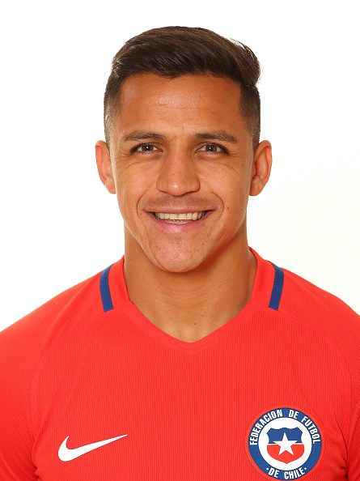
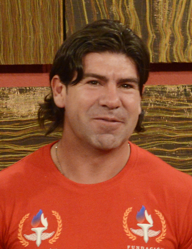
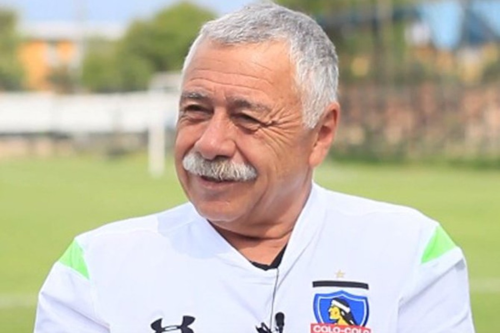

Jugadores
| Descripción
|
Alexis Sanchéz
 | Es famoso por sus regates y velocidad tanto como por su juego ofensivo, ha recibido elogios tanto de periodistas deportivos, como de jugadores de diversos clubes de Europa. También fue premiado por el diario italiano La Gazzetta dello Sport como "el mejor jugador de la Liga Italiana". |
Arturo Vidal
| Arturo Erasmo Vidal Pardo (San Joaquín, Santiago de Chile, 22 de mayo de 1987) es un futbolista chileno que se desempeña como centrocampista en el Inter de Milán de la Serie A de Italia. Además es internacional absoluto con la Selección de Fútbol de Chile desde 2007, de la cual es quinto máximo goleador histórico. |
Claudio Bravo
 | Claudio Bravo Camus, pintor. Nació en Valparaíso, el 8 de noviembre de 1936, falleció el 4 de junio de 2011 en Taroudant, Marruecos. De familia de agricultores, vivió gran parte de su infancia en la zona rural de Melipilla. Comenzó a dibujar a los once años mostrando una clara vocación por las expresiones artísticas. |
Marcelo Salas
 | José Marcelo Salas Melinao (Temuco, Chile; 24 de diciembre de 1974), popularmente conocido como «El Matador», es un exfutbolista chileno, considerado el «mejor delantero de la historia de Chile» y el «mejor futbolista de todos los tiempos» de su país (alternando el primer puesto con Elías Figueroa). |
Iván Zamorano
| (Iván Luis Zamorano Zamora; Maipú, Chile, 1967) Futbolista chileno. En su infancia, su escasa fortaleza física nunca hubiese permitido augurar ningún triunfo deportivo; pero a los 17 años comenzó a jugar ya en la Primera División chilena con el Cobresal. |
Carlos Caszely
 | Carlos Humberto Caszely Garrido nació el 5 de julio de 1950 en Santiago. Jugó en Colo Colo (1967-1973 y 1978-1985). Despuntó como puntero derecho, destacando por su dominio de la pelota en velocidad y tremenda habilidad en espacios reducidos. |
Elias Figueroa
| Elías fue un jugador histórico de los clubes Santiago Wanderers de Valparaíso (su ciudad natal), Peñarol de Uruguay, e Internacional de Brasil; y uno de los futbolistas más importantes de la Selección Chilena, con la que jugó tres Campeonatos Mundiales: Inglaterra 66, Alemania 74 y España 82. |
Alberto Quintano
| Alberto Fernando Quintano Ralph (Santiago de Chile, 26 de abril de 1946) es un exfutbolista, entrenador y directivo de fútbol chileno. Es considerado uno de los mejores futbolistas de la historia de su país. |
Jorge Toro
| Jorge Luis Toro Sánchez (Santiago, 10 de enero de 1939) es un exfutbolista chileno. Jugaba de volante derecho y su primer equipo fue Colo-Colo de Chile. |
Leonel Sánchez
| Leonel Guillermo Sánchez Lineros (Santiago, 25 de abril de 1936-ibídem, 2 de abril de 2022), conocido como "El Gran Leonel", fue un futbolista chileno. Está considerado uno de los mejores futbolistas chilenos de la historia, y el mejor puntero izquierdo de todos los tiempos de su país. |